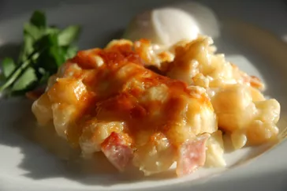

Cheesy Ham and Hash Brown Casserole

Description
TThis ham and hash brown casserole is quick and easy to make, not to mention delicious! I mostly serve this as a breakfast casserole, but it's great anytime!
Ingredients
-
Cooking spray
-
1 (32 ounce) package frozen hash brown potatoes
-
2(10.5 ounce) cans condensed cream of potato soup
-
2 cups shredded sharp Cheddar cheese
-
8 ounces cooked, diced harm
-
1 and half cups grated Parmesan cheese
Steps
Step1
-
Preheat the oven to 375 degrees F (190 degrees C). Lightly grease a 9x13-inch baking dish with cooking spray.
Step2
-
Mix together hash browns, condensed soup, sour cream, Cheddar cheese, and ham in a bowl until well combined. Spread evenly into the prepared dish. Sprinkle with Parmesan cheese.
step3
-
Bake in the preheated oven until bubbly and lightly brown, about 1 hour.